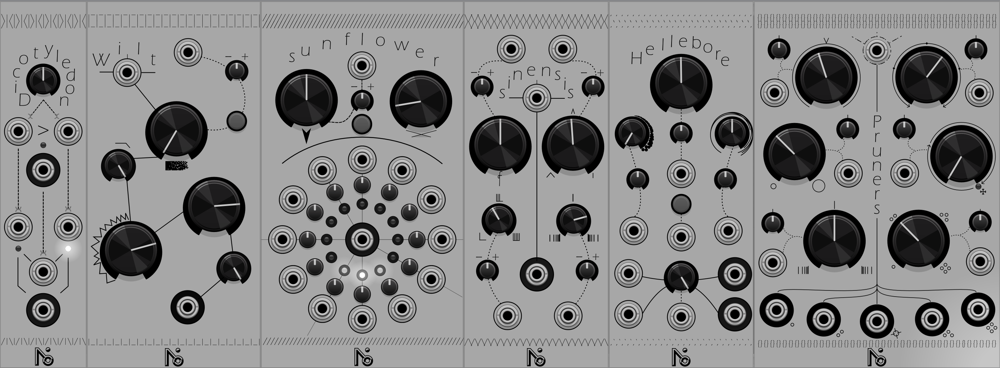
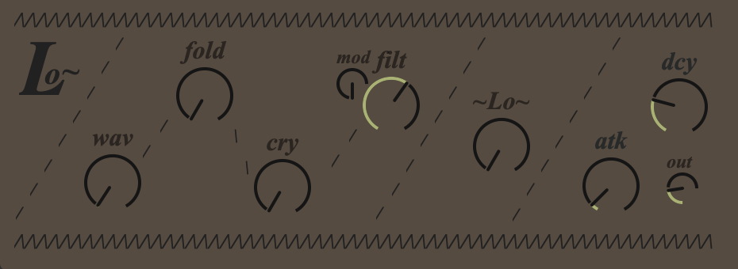

About
Blog
Projects
Knowledge
Downloads
~ P H I L O D E N D R O N ~
VST / AU
Link to the Philodendron Page
~ H E L L E B O R E ~
VST / AU
Link to the Hellebore Page
~ S I N E N S I S ~
VST / AU
Link to the Sinensis Page
~ N 0 ! ~ M O D U L E S ~

Modules for VCV Rack
Link to the VCV library
~ L o ~
Small Max4Live Synth that use some weird buffer modulation to create soothing nostalgic sounds.
Download Link

~ S E N T ~
Max4Live effect used in Noi-Lo
Gated FFT to create bubbly and damaged numeric sounds
Download Link